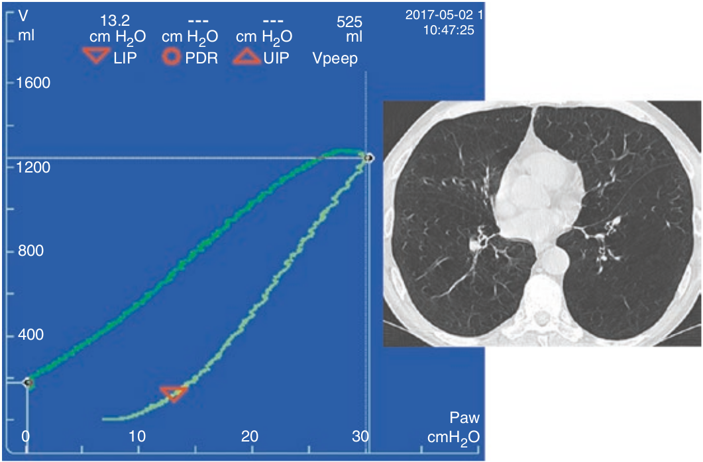

در بیماریهای انسدادی مزمن ریوی از هیستره زیس برای اهداف دیگری غیر از بازگشائی ریه ممکن است استفاده شود. بیماران COPD آمفیزم ریوی دارند. بعلاوه دچار عدم تجانس (heterogeneity) ریوی نیز هستند. این بیماران واحد های برونشی حبابچه ای با ثابت زمانی طولانی دارند که به آهستگی هواگیری میکنند و تخلیه می شوند. بنابراین لوپ بدست آمده با روش شدت جریان اندک در بیماران ARDS که COPD دارند ارزشی ندارد. همچنین افزایش فشار راه هوائی تا ۴۰ سانتی متر آب در این بیماران بخاطر خطر ولوتروما توصیه نمی شود.

هیستره زیس در بیماران COPD:
۱ - همانند ARDS ارزش دارد
۲ - معمولا وجود ندارد
۳ - برای تعیین استعداد بازگشائی بکار می رود
۴ - اساسا به علت ثابت زمانی طولانی برونشی حبابچه ای است
۵ - برای تنظیم PEEP باید آن را در نظر داشت